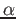

&input atom='Ti', dft='PBE', config='[Ar] 3d2 4s2 4p0', rlderiv=2.90, eminld=-2.0, emaxld=2.0, deld=0.01, nld=3, iswitch=3 / &inputp pseudotype=1, nlcc=.true., lloc=1, file_pseudopw='Ti.pbe-n-rrkj.UPF' / 3 4S 1 0 2.00 0.00 2.9 2.9 3D 3 2 2.00 0.00 1.3 1.3 4P 2 1 0.00 0.00 2.9 2.9In the &input namelist, we specify the we want to generate a PP (iswitch=3) and to calculate nld=3 logarithmic derivatives at rlderiv=2.90 a.u. from the origin, in the energy range eminld=-2.0 Ry to emaxld=2.0 Ry, in energy steps deld=0.01 Ry (note that these values will not affect PP generation). In the &inputp namelist, we specify the we want a single-projector, NC-PP (pseudotype=1), with nonlinear core correction (nlcc=.true.), using the l = 1 channel as local (lloc=1). The output PP will be written in UPF format to file Ti.pbe-n-rrkj.UPF (following the QUANTUM ESPRESSO convention for PP names). Following the two namelists, there is a list of states used for pseudization: the 4S state, with pseudization radius rc = 2.9 a.u.; the 3D state, rc = 1.3 a.u.; the 4P, rc = 2.9 a.u., listed as last because it is the channel to be chosen as local potential.
There is nothing magic or especially deep in the choice of the radius and energy range for logarithmic derivatives, of the local potential and of pseudization radii: it is just a reasonable guess. Running the input, one gets an error:
Wfc 4S rcut= 2.883 Estimated cut-off energy= 14.82 Ry
l= 0 Node at 0.71997236
This function has 1 nodes for 0 < r < 2.883
%%%%%%%%%%%%%%%%%%%%%%%%%%%%%%%%%%%%%%%%%%%%%%%%%%%%%%%%%%%%%%%
from compute_phi : error # 1
phi has nodes before r_c
%%%%%%%%%%%%%%%%%%%%%%%%%%%%%%%%%%%%%%%%%%%%%%%%%%%%%%%%%%%%%%%
This means that the 4S pseudized orbitals has one node. With RRKJ
pseudization (the default), this may occasionally happen. One can
either choose TM pseudization (tm=.true.) or set a small
value of ρ(r = 0) (e.g. rho0=0.001). Let us do the latter.
You should carefully look at the output, which will consists in
an all-electron calculation, followed by the pseudopotential generation
step, followed by a final test. In particular, notice this message
about the nonlinear core correction:
Computing core charge for nlcc:
r > 1.73 : true rho core
r < 1.73 : rho core = a sin(br)/r a= 2.40 b= 1.56
Integrated core pseudo-charge : 3.43
(this is actually not an ideal situation: the pseudization radius for the
charge density should be smaller than all pseudization radii; in our
case, smaller than
rc(min) = rc(l=2) = 1.3 a.u.).
Also notice messages on pseudization:
Wfc 4S rcut= 2.883 Estimated cut-off energy= 5.32 Ry
Using 4 Bessel functions for this wfc, rho(0) = 0.001
This function has 0 nodes for 0 < r < 2.883
Wfc 3D rcut= 1.296 Estimated cut-off energy= 137.82 Ry
This function has 0 nodes for 0 < r < 1.296
(note the large difference between the estimated cutoff for the s and
the d channel! Of course, it is only the latter the ``problem'' one
here); and look at the final consistency check:
n l nl e AE (Ry) e PS (Ry) De AE-PS (Ry)
1 0 4S 1( 2.00) -0.32830 -0.32830 0.00000
3 2 3D 1( 2.00) -0.31302 -0.31302 0.00000
2 1 4P 1( 0.00) -0.10777 -0.10777 0.00000
You should get exactly 0 (within numerical accuracy) in the columnn
at the right.
As a further check, let's have a look at the logaritmic derivatives and at pseudized Kohn-Sham orbitals. Logarithmic derivatives are written to files ld1.dlog and ld1ps.dlog, for AE and PS calculations respectively (file names can be changed using variable prefix). They can be plotted using for instance gnuplot and the following commands:
plot [-2:2][-20:20] 'ld1.dlog' u 1:2 w l lt 1, 'ld1.dlog' u 1:3 w l lt 2,\
'ld1.dlog' u 1:4 w l lt 3, 'ld1ps.dlog' u 1:2 lt 1, \
'ld1ps.dlog' u 1:3 lt 2, 'ld1ps.dlog' u 1:4 lt 3
PS orbitals and the corresponding AE ones are written to file
ld1ps.wfc (PS on the left, AE on the right). They can be
plotted using the following commands:
plot [0:5] 'ld1ps.wfc' u 1:2 lt 1 , 'ld1ps.wfc' u 1:3 lt 3 , \
'ld1ps.wfc' u 1:4 lt 2 , 'ld1ps.wfc' u 1:5 lt 1 w l, \
'ld1ps.wfc' u 1:6 lt 3 w l, 'ld1ps.wfc' u 1:7 lt 2 w l
One gets the following plots (AE=lines, PS=points;
lt 1=red=s; lt 2=green=p; lt 3=blue=d;
note that in the files, orbitals are ordered as given in input,
logarithmic derivatives as s, p, d).
We observe that our PP seems to reproduce fairly well the logarithmic derivatives, with deviations appearing only at relatively high (> 1 Ry) energies. AE and PS orbitals match very well beyond the pseudization radii; the 3d orbital is slightly deformed, because we have chosen a relatively large rc(l=2) = 1.3 a.u.. It is easy to verify that a smaller rc(l=2) yields a better 3d PS orbital, but also a harder d potential: e.g., for rc(l=2) = 1.0 a.u., you get
Wfc 3D rcut= 1.009 Estimated cut-off energy= 225.64 Ry
Before proceding, it is wise to verify whether our PP has ``ghosts''.
Let us prepare the following input for the testing phase
(note the variable iswitch=2 and the &test
namelist):
&input atom='Ti', dft='PBE', config='[Ar] 3d2 4s2 4p0', iswitch=2 / &test file_pseudo='Ti.pbe-n-rrkj.UPF', nconf=1, configts(1)='3d2 4s2 4p0', ecutmin=50, ecutmax=200, decut=50 /This will solve the Kohn-Sham equation for the PP read from file_pseudo, for a single valence configuration (nconf=1) listed in configts(1) (the ground state in this case), using a base of spherical waves whose cutoff (in Ry) ranges from ecutmin to ecutmax in steps of decut. The initial part of the output looks good, but let us look at the test with spherical waves, towards the end:
Cutoff (Ry) : 200.0
N = 1 N = 2 N = 3
E(L=0) = -0.7483 Ry -0.3282 Ry -0.0042 Ry
E(L=1) = -0.1077 Ry 0.0192 Ry 0.0630 Ry
E(L=2) = -0.2961 Ry 0.0304 Ry 0.0654 Ry
The lowest levels found in this way should be the same1
as those calculated from radial integration (see above).
This is true for the 4p state (-0.1077 Ry),
for the 3d state (-0.2961 Ry vs -0.31302 Ry, see footnote),
for the 4s state (-0.3282 Ry)....but note the spurious 4s
level at -0.7483 Ry! Our PP has a ghost and is unusable.
What should be do now? we may try to change the definition of the local potential. We had chosen l = 1, let us try l = 2 and l = 0. The former has the same pathology, the latter has no ghosts. So our data for PP generation are as follows:
&input atom='Ti', dft='PBE', config='[Ar] 3d2 4s2 4p0', rlderiv=2.90, eminld=-2.0, emaxld=2.0, deld=0.01, nld=3, iswitch=3 / &inputp pseudotype=1, nlcc=.true., lloc=0, file_pseudopw='Ti.pbe-n-rrkj.UPF', / 3 4P 2 1 0.00 0.00 2.9 2.9 3D 3 2 2.00 0.00 1.3 1.3 4S 1 0 2.00 0.00 2.9 2.9(note lloc=0 and the 4s state at the end of the list). Let us plot again logarithmic derivatives and orbitals (they look quite the same as before) and run again the test with spherical waves. We get (see the last section in the output):
Cutoff (Ry) : 50.0
N = 1 N = 2 N = 3
E(L=0) = -0.3282 Ry -0.0049 Ry 0.0361 Ry
E(L=1) = -0.1077 Ry 0.0192 Ry 0.0630 Ry
E(L=2) = -0.1469 Ry 0.0311 Ry 0.0682 Ry
Cutoff (Ry) : 100.0
N = 1 N = 2 N = 3
E(L=0) = -0.3282 Ry -0.0049 Ry 0.0361 Ry
E(L=1) = -0.1077 Ry 0.0192 Ry 0.0630 Ry
E(L=2) = -0.2959 Ry 0.0303 Ry 0.0652 Ry
Cutoff (Ry) : 150.0
N = 1 N = 2 N = 3
E(L=0) = -0.3282 Ry -0.0049 Ry 0.0361 Ry
E(L=1) = -0.1077 Ry 0.0192 Ry 0.0630 Ry
E(L=2) = -0.2961 Ry 0.0303 Ry 0.0652 Ry
This time the first column yields (with a small discrepancy for 3d)
the expected levels, and only those levels. It is wise to inspect
the second column as well for absence of suspiciously low levels:
ghosts may appear also as spurious excited states close to occupied
states. Note how bad the energy for the 3d level is at 50 Ry.
At 100 Ry however we are close to convergence and at 150 Ry
well converged, in agreement with the estimate given during
the PP generation (138 Ry).
We have now our first candidate (i.e. not surely wrong) PP. In order to 1) verify if it really does the job, 2) quantify its transferability, 3) quantify its hardness, and 4) improve it, if possible, we need to perform some more testing.
As a first idea of how good our PP is, let us verify how it behaves on differente electronic configuration. The code allows to test several configurations in the following way:
&input atom='Ti', dft='PBE', config='[Ar] 3d2 4s2 4p0', iswitch=2 / &test file_pseudo='Ti.pbe-n-rrkj.UPF', nconf=9 configts(1)='3d2 4s2 4p0' configts(2)='3d2 4s1 4p1' configts(3)='3d2 4s1 4p0' configts(4)='3d2 4s0 4p0' configts(5)='3d1 4s2 4p1' configts(6)='3d1 4s2 4p0' configts(7)='3d1 4s1 4p0' configts(8)='3d1 4s0 4p0' configts(9)='3d0 4s0 4p0' /here we have chosen 9 different valence configurations (the corresponding AE configurations are obtained by superimposing configts to core states in config). Some of them are neutral, some are ionic, the first five leave the 3d states unchanged, the last one is a completely ionized Ti4+. For each configuration, the code writes results (e.g. orbitals) into files ld1N.* and ld1psN.*, where N is the index of the configuration. A summary is written to file ld1.test. For the first configuration, AE and PS eigenvalues and total energies are written:
3 2 3D 1( 2.00) -0.31302 -0.31302 0.00000
1 0 4S 1( 2.00) -0.32830 -0.32830 0.00000
2 1 4P 1( 0.00) -0.10777 -0.10777 0.00000
Etot = -1707.131006 Ry, -853.565503 Ha, -23226.698556 eV
Etotps = -9.748745 Ry, -4.874372 Ha, -132.638416 eV
(AE and PS eigenvalues are in this case the same, since this is the
reference configuration used to build the PP). For the following
configurations, AE and PS eigenvalues, plus total energy
differences2wrt configuration 1 are printed:
3 2 3D 1( 2.00) -0.40319 -0.40457 0.00138
1 0 4S 1( 1.00) -0.38394 -0.38420 0.00026
2 1 4P 1( 1.00) -0.15248 -0.15237 -0.00011
dEtot_ae = 0.226061 Ry
dEtot_ps = 0.226250 Ry, Delta E= -0.000189 Ry
The discrepancy between AE and PS energy differences (in this case,
wrt the ground state) as well as the discrepancies in AE and PS
eigenvalues, are a measure of how transferrable a PP is. In this case,
the AE-PS discrepancy on
δE = E(4s14p13d2) - E(4s24p03d2)
(look at Delta E) is quite small, < 0.2 mRy, while the
maximum discrepancy of the eigenvalues (rightmost column) ∼1 mRy.
These are very good results.
Unfortunately this is also a configuration that doesn't differ much
from the reference one. Let us see the other cases:
3 2 3D 1( 2.00) -0.83550 -0.83256 -0.00295
1 0 4S 1( 1.00) -0.76075 -0.76163 0.00088
2 1 4P 1( 0.00) -0.48549 -0.48617 0.00068
dEtot_ae = 0.539968 Ry
dEtot_ps = 0.540344 Ry, Delta E= -0.000376 Ry
3 2 3D 1( 2.00) -1.44648 -1.44538 -0.00110
1 0 4S 1( 0.00) -1.24186 -1.24652 0.00465
2 1 4P 1( 0.00) -0.91224 -0.91599 0.00375
dEtot_ae = 1.537516 Ry
dEtot_ps = 1.540285 Ry, Delta E= -0.002769 Ry
3 2 3D 1( 1.00) -0.68514 -0.74236 0.05722
1 0 4S 1( 2.00) -0.45729 -0.45802 0.00073
2 1 4P 1( 1.00) -0.18855 -0.18471 -0.00383
dEtot_ae = 0.343391 Ry
dEtot_ps = 0.371650 Ry, Delta E= -0.028259 Ry
3 2 3D 1( 1.00) -1.16621 -1.21438 0.04817
1 0 4S 1( 2.00) -0.87720 -0.87620 -0.00100
2 1 4P 1( 0.00) -0.56807 -0.56137 -0.00670
dEtot_ae = 0.716203 Ry
dEtot_ps = 0.739110 Ry, Delta E= -0.022907 Ry
3 2 3D 1( 1.00) -1.82248 -1.87471 0.05223
1 0 4S 1( 1.00) -1.39447 -1.39936 0.00489
2 1 4P 1( 0.00) -1.03942 -1.03465 -0.00476
dEtot_ae = 1.848995 Ry
dEtot_ps = 1.873240 Ry, Delta E= -0.024245 Ry
3 2 3D 1( 1.00) -2.54976 -2.61959 0.06983
1 0 4S 1( 0.00) -1.94361 -1.96745 0.02383
2 1 4P 1( 0.00) -1.53584 -1.54419 0.00835
dEtot_ae = 3.518170 Ry
dEtot_ps = 3.554733 Ry, Delta E= -0.036564 Ry
3 2 3D 1( 0.00) -3.84145 -3.95251 0.11106
1 0 4S 1( 0.00) -2.73793 -2.81405 0.07612
2 1 4P 1( 0.00) -2.25938 -2.28768 0.02831
dEtot_ae = 6.699594 Ry
dEtot_ps = 6.831938 Ry, Delta E= -0.132344 Ry
It is evident that configurations with 3d2 occupancy are well
reproduced, with errors on total energy differences < 3 mRy and
on eigenvalues< 5 mRy. Configurations with different 3d occupancy,
however, have errors one order of magnitude higher. For the extreme
case of Ti4+, the error is ∼ 0.1 Ry.
In order to better understand what is going on, let us have a look at the AE vs PS orbitals and logarithmic derivatives for configuration 9 (i.e. for the bare PP). Let us add a line like this:
rlderiv=2.90, eminld=-4.0, emaxld=0.0, deld=0.01, nld=3,and plot files ld19ps.wfc, ld19.dlog, ld19ps.dlog using gnuplot as above :

Both the orbitals and the logarithmic derivatives (note the different energy range) start to exhibit some visible discrepancy now.
One can try to fiddle with all generation parameters, better if one at the time, to see whether things improve. Curiously enough, the pseudization radius for the core correction, which in principle should be as small as possible, seems to improve things if pushed slightly outwards (try rcore=2.0). Also surprisingly, a smaller pseudization radius for the 3d state, 0.9 or 1.0 a.u., doesn't bring any visible improvement to transferability (but it increases a lot the required cutoff!). Changing the pseudization radii for 4s and 4p states doesn't affect much the results.
A different local potential – a pseudized version of the total self-consistent potential – can be chosen by setting lloc=-1 and setting rcloc to the desired pseudization radius (a.u.). For small rcloc ghosts re-appear; rcloc=2.9 yields slighty better total energy differences but slightly worse eigenvalues. Note that the PP so generated will also have a s projector, while the previous ones had only p and d projectors.
One could also generate the PP from a different electronic configuration. Since Ti tends to lose rather than to attract electrons, it will be more easily found in a ionized state than in the neutral one. One might for instance use the electronic configuration of the Bachelet-Hamann-Schlüter paper[4]: 3d24s0.754p0.25. This however doesn't seem to improve much.
Finally we end up with these generation data:
&input atom='Ti', dft='PBE', config='[Ar] 3d2 4s2 4p0', iswitch=3 / &inputp pseudotype=1, nlcc=.true., rcore=2.0, lloc=0, file_pseudopw='Ti.pbe-n-rrkj.UPF' / 3 4P 2 1 0.00 0.00 2.9 2.9 3D 3 2 2.00 0.00 1.3 1.3 4S 1 0 2.00 0.00 2.9 2.9